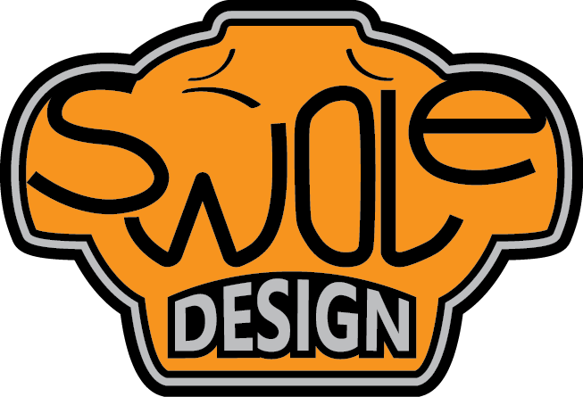

Embody Game
The idea of Embody was started by a group of 5 students attending the University of Washington Bothell. For what was once meant to be just a health application; Embody has become a tool for young males to better understand their body image in order correct negative body image or to prevent it. The Embody team found that there were great demands for resources that address an increasing important issue of negative body image especially in young men. Although negative image is a very serious issue, Embody was created into a fun game in order to address this topic that has forever been taboo for males to talk about.
Embody's design choices are based on research in order to successfully convey the theme across to player. Specific object were used as symbols to represent factors that affect an individual's body image. These objects are turned in to enemies in which the player must overcome. The player must make correct actions in order to excel in the game and ultimately these choices can be related into the player's real life.
The goal of Embody is to help young males improve their negative body image before it leads to more serious health issues such as depression, obsessions with weight loss, eating disorders, and substance abuse. The Embody team hopes to come out with more resources for young men dealing with negative body image in the near future.
Check out our blog
Embody, by .